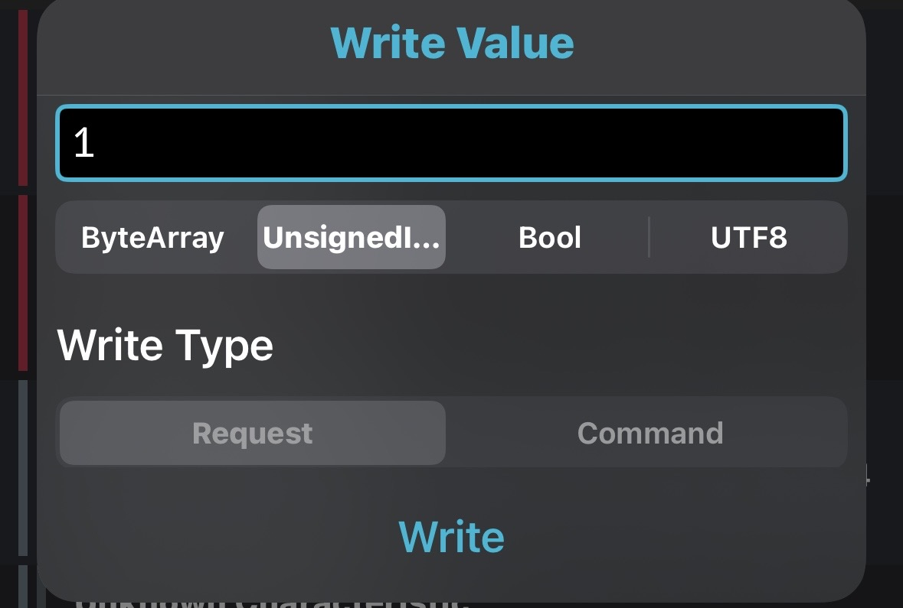
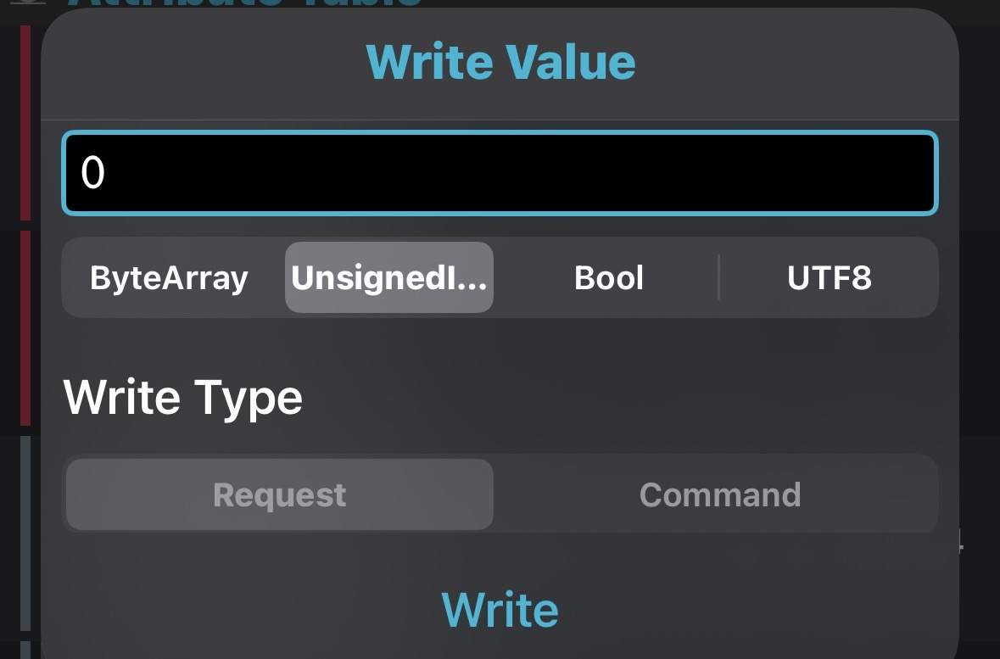
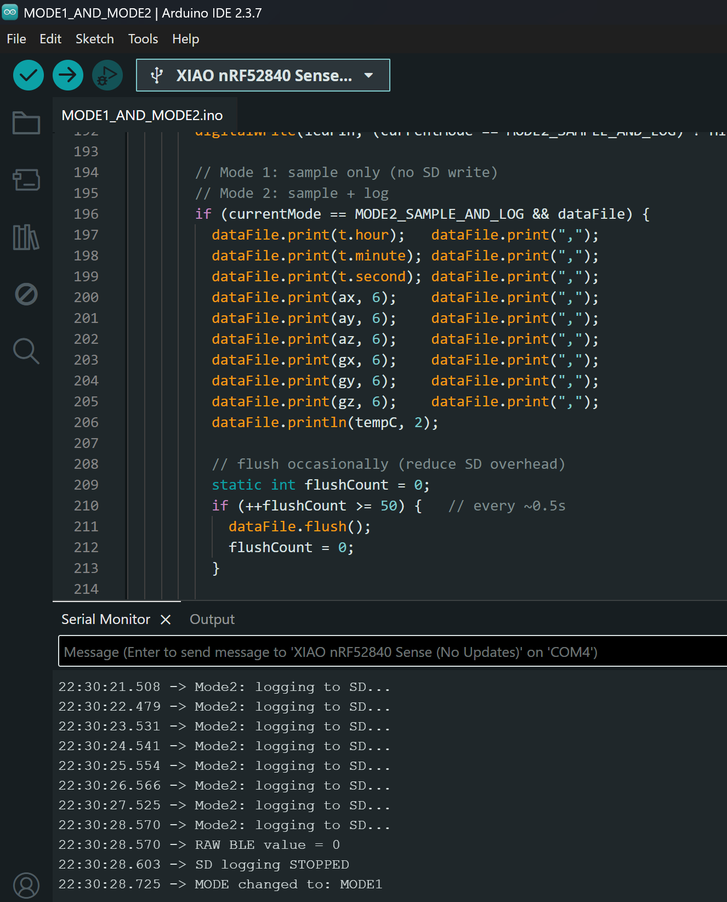
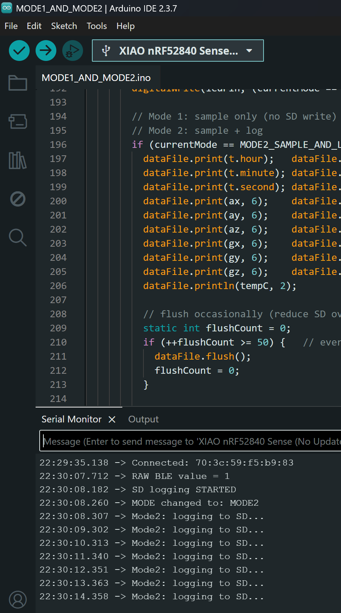
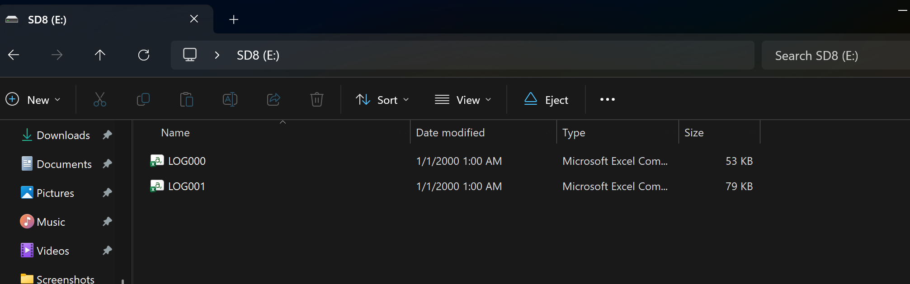

nRF Connect LED Test (BLE Write)
When I write 1 in the BLE app, the board shows Green LED. When I write 0, the board shows Red LED.




Code file for this test: LEDNRF.ino
Operating Modes (Mode 1 & Mode 2)
This program supports two operating modes:
- Mode 1: Sampling only (no SD write)
- Mode 2: Sampling + SD logging (writes to SD)
Code file: MODE1_AND_MODE2.ino



USB Power Meter Setup


USB Power Measurement (Video Proof)
Mode 1 — No SD Logging
USB power meter reading while running Mode 1 (sampling only).
Mode 2 — SD Logging Enabled
USB power meter reading while running Mode 2 (sampling + SD logging).
Note: Videos are set to muted. Audio cannot be “removed” using HTML; it must be muted (or edited).
Power Measurement Results & Calculations
Raw Measurements
Mode 1 (Sample only / No SD Logging)
- Current (A): 0.024, 0.028, 0.032
- Voltage (V): 5.105, 5.097, 5.080
Mode 2 (Sample + SD logging)
- Current (A): 0.044, 0.048, 0.052
- Voltage (V): 5.105, 5.097, 5.080
Step-by-Step Calculations
1) Average USB Voltage (both modes)
2) Average USB Current
Mode 2: Iusb,avg(M2) = (0.044 + 0.048 + 0.052) / 3 = 0.144 / 3 = 0.048 A = 48 mA
3) USB Power (Pusb = Vusb,avg × Iusb,avg)
Mode 2: Pusb(M2) = 5.094 × 0.048 = 0.244512 W ≈ 0.245 W
4) Battery current estimate (500 mAh @ 3.7 V, η = 0.85)
3.7 × 0.85 = 3.145
Mode 1: Ibatt(M1) = 0.142632 / 3.145 = 0.04535 A = 45.35 mA
Mode 2: Ibatt(M2) = 0.244512 / 3.145 = 0.07775 A = 77.75 mA
5) Runtime estimate (Battery capacity = 0.5 Ah)
Mode 1: t(M1) = 0.5 / 0.04535 = 11.02 hours
Mode 2: t(M2) = 0.5 / 0.07775 = 6.43 hours
SD Logging Overhead (Mode2 − Mode1)
ΔP = 0.244512 − 0.142632 = 0.10188 W ≈ 0.102 W
Δt = 6.43 − 11.02 = −4.59 hours
Final Results Table
| Mode | Vusb,avg (V) | Iusb,avg (mA) | Pusb (W) | Ibatt (mA) | Runtime (hours) |
|---|---|---|---|---|---|
| Mode 1 (Sample Only) | 5.094 | 28 | 0.143 | 45.35 | 11.02 |
| Mode 2 (Sample + SD Log) | 5.094 | 48 | 0.245 | 77.75 | 6.43 |
| Overhead (Mode2 − Mode1) | — | +20 | +0.102 | +32.40 | −4.59 |
Discussion
Mode 2 consumes more current and power because SD card writes add extra hardware activity (SD interface + periodic file flush). SD logging is bursty, which also explains the fluctuations in the readings. Compared to Mode 1, logging increases the average USB current by 20 mA and the average USB power by ~0.102 W. Using the lab battery model (500 mAh @ 3.7 V, 85% efficiency), the estimated battery current increases from 45.35 mA (Mode 1) to 77.75 mA (Mode 2), reducing estimated runtime from ~11.0 hours to ~6.4 hours.